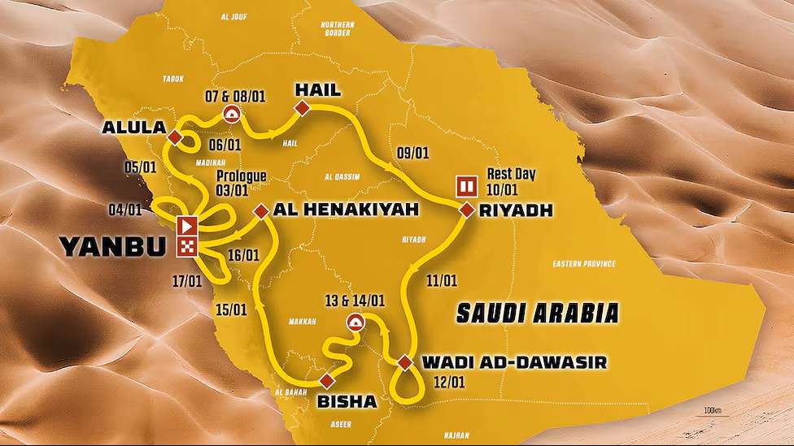

Finaliza 2025 y 2026 inicia con el primer evento deportivo del año, la carrera más dura del mundo motor. El Dakar 2026 se celebrará del 3 al 17 de enero en Arabia Saudí, con una ruta de unos 7,281 km.
812 competidores y 433 vehículos estarán en ruta partiendo en el prólogo en Yanbu, dando inicio a esta gran aventura.

Ruta oficial del Rally Dakar 2026.
🇲🇽 Representación Mexicana
Este año México tendrá como representante a Nicolas Ambriz, integrante del equipo MOTO BENNY RACING en la categoría Classic.

El equipo mexicano buscando hacer historia en el desierto.